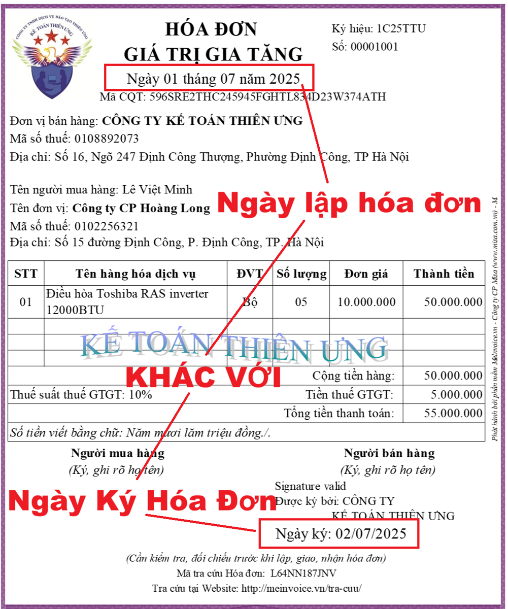

Hóa đơn có ngày lập và ngày ký khác nhau có hợp lệ không? Bên bán và bên mua kê khai hóa đơn có ngày lập và ngày ký khác nhau như thế nào? Kế toán Diệu Tâm xin trích các văn bản hiện hành quy định về việc ngày lập và ngày ký hóa đơn khác nhau để các bạn tham khảo nhé.
Từ ngày 01/06/2025 trở đi: Thực hiện theo quy định tại điểm c, khoản 7, điều 1 Nghị định 70/2025/NĐ-CP sửa đổi khoản 9, điều 10 của Nghị định 123/2020/NĐ-CP quy định về hóa đơn, chứng từ như sau:
“9. Thời điểm ký số trên hóa đơn điện tử là thời điểm người bán, người mua sử dụng chữ ký số để ký trên hóa đơn điện tử được hiển thị theo định dạng ngày, tháng, năm của năm dương lịch. Trường hợp hóa đơn điện tử đã lập có thời điểm ký số trên hóa đơn khác thời điểm lập hóa đơn thì thời điểm ký số và thời điểm gửi cơ quan thuế cấp mã đối với hóa đơn có mã của cơ quan thuế hoặc thời điểm chuyển dữ liệu hóa đơn điện tử đến cơ quan thuế đối với hóa đơn điện tử không có mã của cơ quan thuế chậm nhất là ngày làm việc tiếp theo kể từ thời điểm lập hóa đơn (trừ trường hợp gửi dữ liệu theo bảng tổng hợp quy định tại điểm a.1 khoản 3 Điều 22 Nghị định này). Người bán khai thuế theo thời điểm lập hóa đơn; thời điểm khai thuế đối với người mua là thời điểm nhận hóa đơn đảm bảo đúng, đầy đủ về hình thức và nội dung theo quy định tại Điều 10 Nghị định này.”
(Nghị định 70/2025/NĐ-CP Ban hành ngày 20/03/2025, có hiệu lực thi hành từ ngày 01/6/2025)
Còn trước ngày 01/06/2025 thì: Thực hiện theo quy định tại Nghị định 123/2020/NĐ-CP như sau:
Căn cứ theo khoản 7 Điều 3 Nghị định số 123/2020/NĐ-CP quy định:
"7. Hóa đơn, chứng từ hợp pháp là hóa đơn, chứng từ đảm bảo đúng, đầy đủ về hình thức và nội dung theo quy định tại Nghị định này."
Căn cứ theo khoản 9 Điều 10 Nghị định số 123/2020/NĐ-CP quy định:
"9. Thời điểm ký số trên hóa đơn điện tử là thời điểm người bán, người mua sử dụng chữ ký số để ký trên hóa đơn điện tử được hiển thị theo định dạng ngày, tháng, năm của năm dương lịch.
- Trường hợp hóa đơn điện tử đã lập có thời điểm ký số trên hóa đơn khác thời điểm lập hóa đơn thì thời điểm khai thuế là thời điểm lập hóa đơn."
Căn cứ theo Công văn 1586/TCT-CS ngày 04/5/2023 của Tổng cục thuế hướng dẫn:
Tổng cục Thuế nhận được đơn phản ánh kiến nghị số PAKN 20221019.0064 của độc giả Thái Mạnh Cường hỏi về việc khai thuế GTGT đối với hóa đơn điện tử có ngày lập khác ngày ký. Tổng cục Thuế có ý kiến như sau:
Căn cứ quy định tại Điều 14 Luật thuế giá trị gia tăng 2008;
Căn cứ Điều 5, điểm a khoản 2 Điều 9 Nghị định số 209/2013/NĐ-CP ngày 18/12/2013 của Chính phủ;
Căn cứ Điều 8, khoản 1 Điều 15 Thông tư số 219/2013/TT-BTC ngày 31/12/2013 của Bộ Tài chính hướng dẫn thi hành Luật thuế giá trị gia tăng và Nghị định số 209/2013/NĐ-CP ngày 18/12/2013 của Chính phủ;
Căn cứ khoản 7 Điều 3, Điều 10 Nghị định số 123/2020/NĐ-CP ngày 19/10/2020 của Chính phủ quy định về hóa đơn, chứng từ;
Căn cứ quy định tại Quyết định số 1450/QĐ-TCT ngày 7/10/2021 của Tổng cục trưởng Tổng cục Thuế Ban hành Quy định về thành phần chứa dữ liệu nghiệp vụ hóa đơn điện tử và phương thức truyền nhận với cơ quan thuế;
Căn cứ các quy định nêu trên, trường hợp hóa đơn điện tử bán hàng hóa, cung cấp dịch vụ đã lập có thời điểm ký số trên hóa đơn khác thời điểm lập hóa đơn thì nếu thời điểm ký số trên hóa đơn phát sinh cùng thời điểm hoặc sau thời điểm lập hóa đơn thì hóa đơn điện tử đã lập vẫn được xác định là hóa đơn hợp lệ:
- Người bán thực hiện kê khai nộp thuế GTGT theo thời điểm lập hóa đơn;
- Người mua thực hiện kê khai thuế tại thời điểm nhận hóa đơn đảm bảo đúng, đầy đủ về hình thức và nội dung theo quy định tại Điều 10 Nghị định số 123/2020/NĐ-CP của Chính phủ.
-----------------------------------------------------------------
- Hóa đơn có ngày lập và ngày ký khác nhau là hóa đơn hợp lệ.
- Bên bán: Kê khai nộp thuế GTGT theo thời điểm lập hóa đơn (nghĩa là ngày lập hóa đơn là ngày nào thì kê khai vào thời điểm đó).
- Bên mua: Kê khai thuế tại thời điểm nhận hóa đơn đảm bảo đúng, đầy đủ về hình thức và nội dung theo quy định (Nghĩa là kê khai vào thời điểm nhận được hóa đơn đó đã có chữ ký của người bán)
Ví dụ:
Ngày 31/03/2024 Công ty tư vấn Minh Phúc lập hóa đơn số 2315 cho Công ty Việt Anh. Nhưng ngày hôm đó chưa thực hiện ký hóa đơn. Đến ngày 01/04/2024 thì Công ty Diệu Tâm mới thực hiện ký và gửi hóa đơn đó cho Công ty Việt Anh.

Căn cứ vào hóa đơn trên 2 bên kê khai hóa đơn có ngày lập và ngày ký khác nhau như sau:
Bên bán (Diệu Tâm): Kê khai hóa đơn số 2315 đó vào tháng 3/2024 (nếu kê khai theo tháng) hoặc kê khai vào quý 1/2024 (nếu kê khai theo quý)
Bên mua (Công ty Việt Anh): Kê khai hóa đơn số 2315 đó vào tháng 4/2024 (nếu kê khai theo tháng) hoặc kê khai vào quý 2/2024 (nếu kê khai theo quý)
-------------------------------------------------------------------
Kế toán Diệu Tâm chúc các bạn thành công!
Các bạn muốn tìm hiểu về: Cách lập hóa đơn, xử lý hóa đơn khi viết sai, tính thuế, kê khai thuế GTGT, TNCN tháng/quý, cách xác định chi phí được trừ - không được trừ, cách lập các tờ khai quyết toán thuế cuối năm thuế TNCN, TNDN ... thì có thể tham gia Khóa học kế toán thuế thực tế online.
------------------------------------------------------------------------------